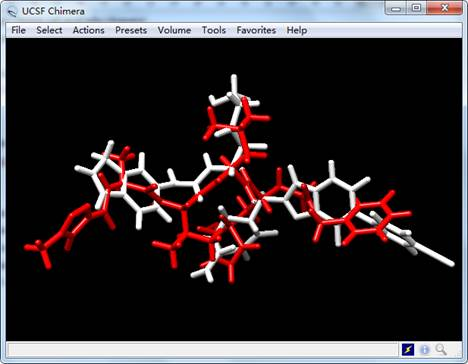

Quick start tutorial
In this tutorial, the SARS-CoV-2 main protease (Mpro) which leads to the rapid spread of coronavirus disease 2019 (COVID-19) throughout the world is selected as the example target. The crystal structures of SARS-CoV-2 Mpro have been reported (PDB ID: 6LU7, 6Y2F, etc) [1,2]. Here, the built structure of SARS-CoV-2 Mpro provided by the group of Prof. Zihe Rao is selected as our quick start example.

Figure 1. The structure of SARS-CoV-2 Mpro
Materials
1. Software requirement
1) MolAICal: https://molaical.github.io
2) UCSF Chimera: https://www.cgl.ucsf.edu/chimera/
Make sure every software is installed rightly.
2. Example files
All the necessary tutorial files are downloaded from: QuickStart
Procedure
1. Open “InputParFile.dat” file, it needs to modify four parameters for this tutorial:
------------------------------------------------------------------------------------------
receptorPDB mproNolig.pdb
startFragFile startFrag.mol2
centerPoints -10.733 12.416 68.829
boxLengthXYZ 30.0 30.0 30.0
-------------------------------------------------------------------------------------------
The “receptorPDB” is set to the PDB format structure of SARS-CoV-2 Mpro without ligand. The “startFragFile” is set to the initial fragment. The “centerPoints” and “boxLengthXYZ” represent the box center and length, respectively.
2. Download and open tutorial folder “000-quickStart”, then run command as below:
#> molaical.exe -denovo grow -i InputParFile.dat
Results
The results are stored in the folder named “001-AIGrow/results”. The “AstatisticsFile.dat” records the information of designed ligands that contain ID, Name, Cluster, Affinity, Formula, InChIKey. The results are just a simple demo example that does not contain full running results. The full results can be obtained by finishing this task.
Open crystal ligand N3 named “ligand.mol2” of SARS-CoV-2 Mpro and generated ligand named “lig_11.mol2”:

Figure 2. The results of generated ligand (white) and inhibitor N3 (red) of SARS-CoV-2 Mpro.
The detailed tutorial can be referred in the first tutorial of “1. Drug design tutorials of MolAICal” in https://molaical.github.io/
References
[1] Jin, Z. et al. Structure of Mpro from COVID-19 virus and discovery of its inhibitors. Nature (2020).
[2] Zhang, L. et al. Crystal structure of SARS-CoV-2 main protease provides a basis for design of improved alpha-ketoamide inhibitors. Science (2020).